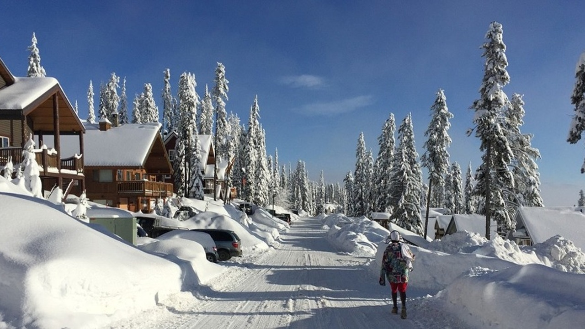
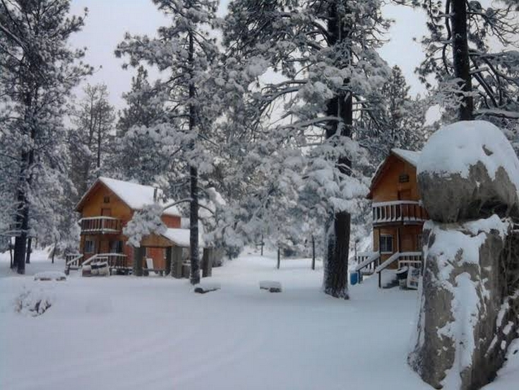

INVIERNO

El invierno es una de las cuatro estaciones de las zonas templadas. Se caracteriza por días más cortos, noches más largas y temperaturas más bajas conforme nos alejamos del ecuador. Es la estación posterior al otoño y que precede a la primavera.
El invierno astronómico es el periodo comprendido entre el solsticio de invierno y el equinoccio de primavera. Sin embargo, el invierno meteorológico comienza antes, abarcando los meses completos de diciembre, enero y febrero. Éste se basa en el ciclo de temperatura anual y el calendario, en lugar del viaje de la Tierra alrededor del Sol.
Cuando comienza el invierno en uno de los hemisferios, empieza el verano en el otro. Se le cataloga como invierno boreal cuando ocurre en el hemisferio norte y como invierno austral cuando se produce en el hemisferio sur.
Cabe añadir que en la zona intertropical a veces se emplea el término para referirse a la estación seca, e <> para la estación lluviosa.
¿CUANDO EMPIEZA Y CUANDO TERMINA EL INVIERNO?
El solsticio de invierno marca el inicio del invierno astronómico, momento en que el Sol incide sobre la tierra con el mayor ángulo con el plano del ecuador (lo mismo ocurre en el solsticio de verano). Se trata del día más corto del año en el hemisferio invernal (menor número de horas de luz solar), ya que la inclinación del eje terrestre es tal que la incidencia solar es mínima. La inclinación máxima del eje terrestre es de 23° 27′ y sucede dos veces el año, durante los dos solsticios.
Esto sucede (en función del año) alrededor del 21 de diciembre en el hemisferio norte, y entre el 20 y 23 de junio en el hemisferio sur. Además, el solsticio de invierno de un hemisferio coincide con el solsticio de verano (día más largo del año) en el otro hemisferio, y viceversa.
El equinoccio de primavera marca el final del invierno y el principio de la primavera. Durante los equinoccios, el Sol alcanza la altura máxima sobre el ecuador, es decir, se encuentra sobre la línea del ecuador y por esas fechas el día y la noche tienen la misma duración en ambos hemisferios (equilux).
El equinoccio de primavera se da alrededor del 21 de marzo en el hemisferio norte, y alrededor del 22 de septiembre en el hemisferio sur, con pequeñas variaciones en función del año. Además, el equinoccio de primavera en un hemisferio coincide con el equinoccio de otoño en el otro, y viceversa.
